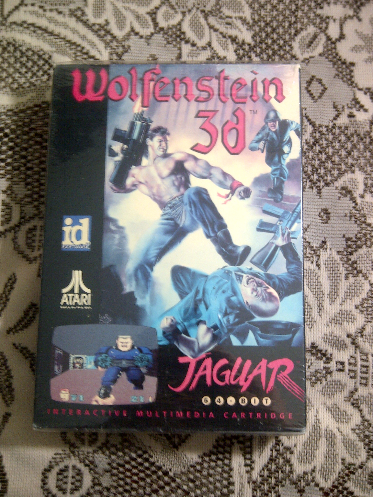
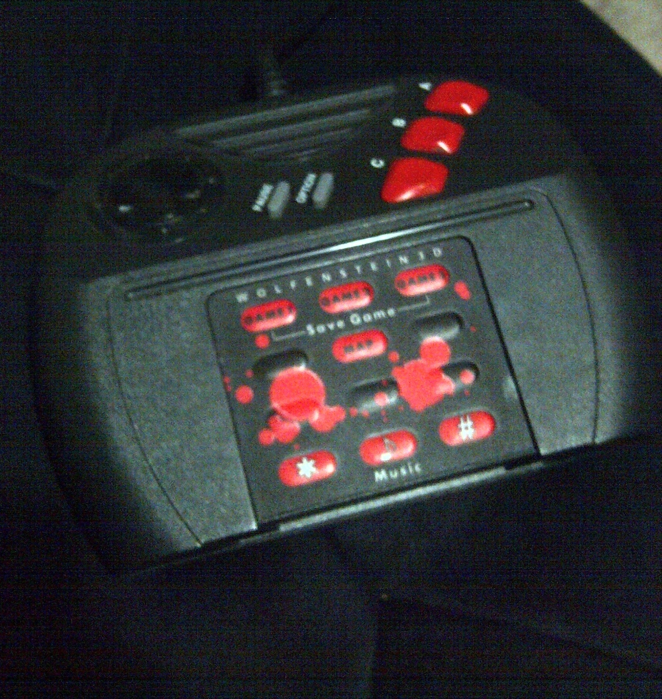
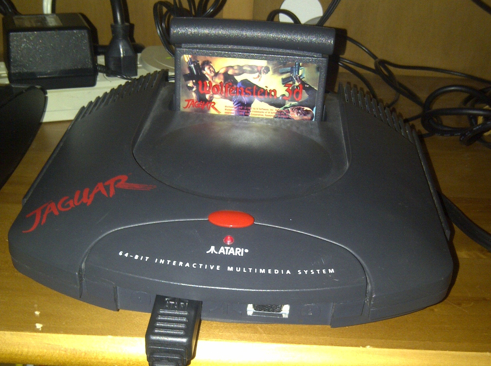

Wolfenstein 3D (Atari Jaguar) Review
August 31st 2015
Wolfenstein 3D was a PC game from the early 90's very similar to Doom. In Wolfenstein 3D you play as a special American soldier who fights his way through a series of German castles during World War 2 in order to cripple Nazi operations. Like Doom it saw its way across many platforms including the "64-bit" Atari Jaguar. I've previously played the Super Nintendo port of this game and was mostly satisfied despite most gamers at the time considering it a disappointment. Let's see how the Atari Jaguar version stacks up.
Gameplay: The games levels are divided into sets of missions with several floors each. Each floor is one level. The objective is to shoot your way through the enemy Nazi soldiers to get to the exit. You may need to get one or two keys to achieve this. Through the levels there are weapons, ammo, treasure, health packs and secret passageways. At the last floor of a mission there is a boss to fight. The boss battles are very similar for all six missions though.
On the Jaguar: The graphics on the Jaguar are great. The graphics are vastly superior to the Super Nintendo and apparently are even better than the PC version. The controls are very good for an early FPS. I liked them much better than the Nintendo version and even better than Doom on the Sega 32X.
The Atari Jaguar was criticized for having a number pad on its controller. However one thing that the Jaguar has is overlay cards that would show you what each of the numbers did. I actually really like the idea of overlays after playing this game and wish some other consoles of the 90's would of tried something similar.
Weapons: You start the game with just a pistol but will have the chance to find and upgrade to other weapons such as machine guns, chain guns, flame throwers and rockets. In addition you always have a knife for when you use up all your ammo. When you die in the game you start at the beginning of the level, however you will only have your pistol. It is possible to find new weapons again, but very difficult to get them with just the pistol while on harder levels. I would usually just reset the game and load my save to get my weapons back.
Saving: By the early 90's saving games was quite common and the Jaguar version of Wolfenstein 3D allows you to save up to three files. This is an improvement over the Super Nintendo version that made you enter a long code to get back to where you once were. On the Jaguar you can save the game at any time but when you load your save it will start you at the beginning of the level.
Game Modes: An interesting thing about Wolfenstein 3D is that you can set the difficulty before loading a save, meaning you don't have to play the game on the same difficulty all the way through. The game comes with three difficulties: easy, medium and hard. On easy you only take half the damage from enemy bullets. In hard mode the enemies are more aggressive towards you making the game more fast pace.
Conclusion: The Atari Jaguar was not by any means a great console as far as power and game library, but Wolfenstein 3D is a great port and much better than the Super Nintendo version. If you are a collector of Atari Jaguar games I'd consider this a must have.